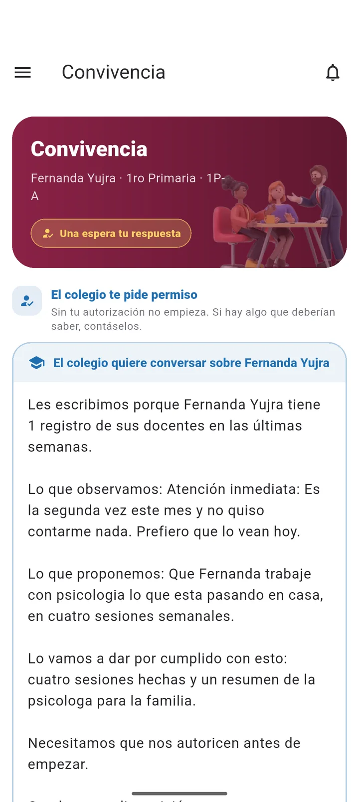

App
Familias
Se inscriben, pagan con QR y siguen a sus hijos.
La web para el colegio y la app para cada familia, docente y alumno. Todos con la misma información, al instante.


El colegio abre sus admisiones en una página con su propia imagen. La familia postula desde el celular, sin filas ni papeles.


Los datos del hijo y de la familia, un último vistazo y listo. Con su código, la familia sigue la postulación cuando quiera.


La familia recibe su confirmación al instante. Dirección académica ve cada postulación con su estado, sus documentos y por dónde entró.


La familia ve lo que debe, elige pagar con QR y escanea con la app de su banco. Sin filas en caja ni comprobantes por WhatsApp.


Cada pago entra a la caja del día con su medio y quién lo cobró. Al final del día se cuenta y se cierra.

Asistencia, notas, tareas y avisos de cada hijo, en la app. Sin esperar a la reunión de padres ni al boletín.


Cada aviso dice qué pasó y qué se espera. La familia autoriza, confirma o ve el detalle desde el mismo aviso.



Su día, sus listas y sus notas en el celular. Cuando cierra la lista, la familia del que faltó recibe el aviso.


El cuaderno le muestra cuánto lleva y qué le falta antes del cierre. Y la nota que carga, el alumno la ve al instante.


Lo que puede impedir el cierre del trimestre, con nombre y apellido. A tiempo para actuar.

Escala, nota para aprobar y el peso de cada dimensión. Todos los docentes califican con la misma regla.

El avance de notas por curso, materia y docente. Verde: al día. Ámbar: falta.

Cada uno contesta algo concreto, con el dato real del sistema y listo para exportar.

¿Qué cursos faltan más?

¿Quién no entrega las tareas?

¿Quién está por perder el año?

Notas por alumno y materia

Horarios docentes, sin choques

Aulas ocupadas
Licencias, justificaciones y postulaciones esperan su decisión en una bandeja, con la norma a la vista.


Desde la postulación hasta la última nota: todo en orden, y cada paso con el módulo del que salió.

Se inscriben, pagan con QR y siguen a sus hijos.

Su día, su horario, sus tareas y sus notas.
Pasan lista, califican y avisan desde el aula.
Ve todo, decide y actúa a tiempo.
Agendemos una demostración con los datos de su colegio.